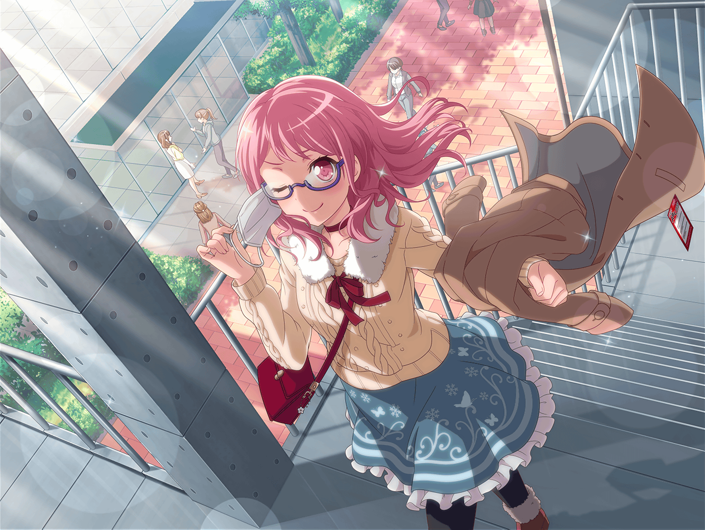

お渡し会前
芸能事務所 レッスンスタジオ
彩
麻弥ちゃんもイヴちゃんも、
これでお渡し会の準備は、バッチリだね！
彩
よーし、次は私の番！
頑張るぞ～！
イヴ
じゃあ私がお客さん役になりますね！
それじゃあ……コホン
イヴ
アヤさんっ！ 大ファンです！
これからも応援してます！
彩
は、はいっ！
あ、ありがって、じゃなくって……
ありがちっ……うぅ……
彩
うわ～ん、緊張しちゃって
うまくお話できそうにないよ～！
彩
うぅ……練習でもこんなんじゃ、
本番はもっと大変なことになっちゃうよね……
どうしよう……
麻弥
そうだ！
受け答えのマニュアルを、
作ってみるのはどうですか？
イヴ
そうですね！
あらかじめ聞かれる質問が想定できてれば、
きっと上手に答えられるはずです！
彩
う、うん！ やってみようっ！
１時間後
イヴ
アヤさん、ファンです！
これからも応援してます！
彩
はいっ！
ありがとうございます！
応援してくれて、とってもうれしいです！
彩
……ど、どうだった！？
麻弥
はい、受け答えバッチリでしたよ！
笑顔も素敵でしたっ
イヴ
アヤさん、これなら本番もうまくいきそうですね！
彩
ありがと～！
２人が一緒に練習してくれたおかげだよ～！
彩
よ～し！
お渡し会、頑張るぞ～！
麻弥・イヴ
おー！

お渡し会後
楽屋
彩
みんな、お疲れさま～……
麻弥
お疲れさまでしたっ！
あれ、元気ないですね。
どうしたんですか？
彩
結局緊張しちゃって、
全然マニュアル通りに
お返事できなかったんだよ～……
彩
せっかく練習したのに……
２人とも、ゴメンね……
イヴ
そ、そんな！
謝らないでください！ 本番と練習は別物ですから！
麻弥
そうですよ！
練習通りにはいかないものですし！
彩
うん、ありがとう……
彩
いざファンの人達とお話ししたら、
いろんな言葉をかけてもらって……
彩
遠くから来てくれたこととか、
研究生の頃から応援してくれてたこととか……
彩
そういうの１つ１つにお礼がしたいな、って思って
どうやったら伝わるのか考えてたら、
頭の中が真っ白になっちゃって……
麻弥
それだけ彩さんが、ファンの方を思って
お渡し会に臨んだってことじゃないですか！
イヴ
はい！
とっても素敵なことだと思います！
彩
うぅ……ありがとう～……
でも結局それをうまく伝えられなかったら、
ダメだよね……
イヴ
アヤさん……
麻弥
……そうだ！
これを見てください！
彩
これって……ファンの人の感想？
麻弥
はい！
お渡し会に参加してくれたファンの人達の
感想が載っている掲示板です！
イヴ
……あ！
アヤさんへの感想がありますよ！
彩
な、何て書いてあるのっ！？
みんな、ガッカリしてない！？
イヴ
全然そんなことないですよ、ほら！
『彩ちゃんは一生懸命自分の言葉で返してくれたのが、
すごく印象的だった』だそうです！
麻弥
こっちにも『アワアワしてるのも可愛かったし、
大勢のファンに対してじゃなくて、自分と会話しようと
してくれていたのが嬉しかった』って！
彩
み、みんな喜んでくれてるってこと……？
イヴ
はい！ アヤさんの気持ち、ちゃんと届いてましたよ！
彩
よ、よかった～……
ファンの人達が喜んでくれて……
彩
よーし、決めたっ！
私……次のお渡し会の時は、
マニュアルなしで、頑張ってみるよ！
彩
正直上手に話せる自信は全然ないけど……
彩
それでもやっぱり自分の言葉で伝えるのが、一番だもんね！
イヴ
はい！ アヤさんらしいことが一番だと思いますっ！
麻弥
次のイベントが楽しみですね！
彩
うん、麻弥ちゃん、イヴちゃん……ありがとう！